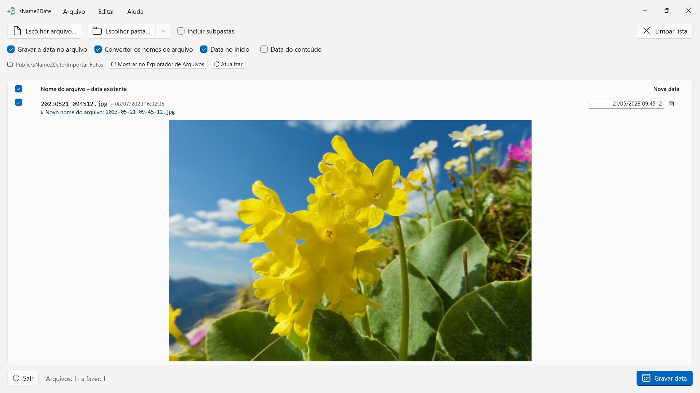
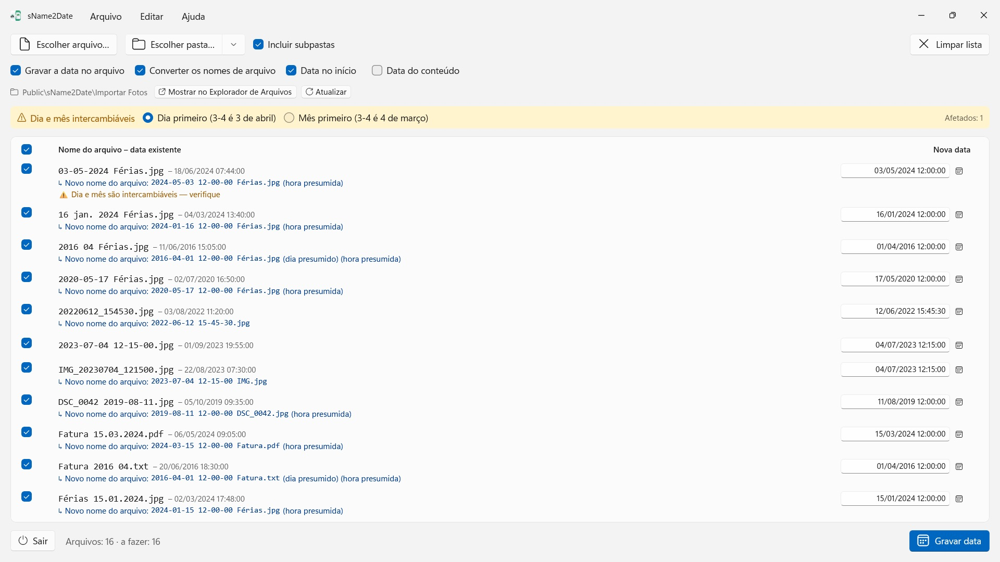

sName2Date
Lê a data do nome do arquivo — mais de uma dúzia de grafias, nomes de mês no idioma do app e em inglês
Tira a data do nome do arquivo e a grava como data de captura em fotos e filmes — para que seu gerenciador de fotos e o Explorador de Arquivos os ordenem corretamente. Pastas inteiras de uma vez, tudo se desfaz com Ctrl+Z.


Muitas fotos e filmes trazem a data no nome do arquivo, assim como gravações de áudio e documentos como PDFs — mas não onde os programas a procuram. Quem recebe imagens de uma conversa, de um scanner ou de um arquivo antigo fica com arquivos como IMG_20240115_103000.jpg, Férias 15.01.2024.jpg ou Fatura 23112024.pdf, que aparecem em qualquer gerenciador de fotos e no Explorador de Arquivos com a data de hoje.
O sName2Date lê a data do nome do arquivo e a grava como data de captura dentro do arquivo. Se ainda não houver nenhuma, ela é criada. Em PDFs e outros arquivos sem data de captura, o app define as datas de criação e modificação do arquivo.
25 idiomas: inglês, alemão, tcheco, croata, holandês, finlandês, francês, húngaro, italiano, japonês, coreano, norueguês bokmål, persa, polonês, português (Brasil e Portugal), romeno, russo, espanhol, sueco, tailandês, turco, ucraniano, chinês (simplificado e tradicional). O app segue o idioma de exibição do Windows.
GRAFIAS RECONHECIDAS
Data e hora nas formas usuais, entre outras:
- 2024-01-15 10-30-00
- IMG_20240115_103000
- IMG-20240115-WA0001
- 2024-01-15 · 2024 01 15 · 2024_01_15
- 15.01.2024 · 15-01-2024 · 15.01.24 · 15012024
- 15 jan. 2024 · 15 março 2024 · January 15 2024
- 2016 04 · 04-2016 — apenas ano e mês
Nomes de mês por extenso são lidos no idioma do app e em inglês, tanto na forma longa quanto na abreviada.
Se o nome trouxer apenas a data, um horário é presumido; qual deles, você decide. Faltando também o dia, vale o primeiro do mês — e a linha informa isso. Havendo várias datas no nome, vence a primeira. E onde dia e mês seriam intercambiáveis, você decide — o padrão vem do formato regional do Windows, e os arquivos afetados são marcados, em vez de adivinhados em silêncio.
Se o nome não trouxer data alguma, você mesmo a informa à direita, na própria linha. Isso alcança até 1826, o ano da fotografia mais antiga preservada — imagens digitalizadas do século XIX podem, portanto, ser datadas como as de ontem.
O QUE É ALTERADO
São gravados EXIF DateTimeOriginal e DateTimeDigitized, além de TIFF DateTime; em filmes e gravações de áudio, a data de criação dentro do contêiner. Se você quiser, também a data de criação e de modificação do próprio arquivo.
Os dados de imagem permanecem intocados: um JPEG não é comprimido novamente, um filme não é recodificado. Em filmes e gravações de áudio, o aplicativo em geral altera apenas alguns bytes no contêiner, em vez de reescrevê-lo — assim, mesmo um filme grande fica pronto num instante. Depois de gravar, o app relê a data; a cor da linha mostra onde ela foi parar.
A data de captura vai para dentro do próprio arquivo em JPEG, TIFF e HEIC (com as Extensões de Imagem HEIF da Microsoft), nos formatos de filme MP4, MOV e M4V e nos formatos de áudio M4A e M4B. PNG, GIF, WebP, AVI e fotos RAW recebem ao lado um arquivo XMP anexo, que muitos programas de fotos leem — a linha mostra isso com um sinal de verificação azul.
TAMBÉM ARQUIVOS QUE NÃO PODEM TER DATA DE CAPTURA
Um PDF, um arquivo de texto, uma planilha não têm campo algum para uma data de captura — e mesmo assim entram na lista. O sName2Date define neles a data de criação e de modificação do arquivo, o único lugar a que a informação pode chegar; a linha mostra isso com um sinal de verificação laranja em vez de um verde. Aqui nenhuma extensão importa: PDF, texto, planilhas, arquivos compactados, tudo.
Se o arquivo não deve ser tocado, você tira no alto da janela a opção Gravar a data no arquivo. Então o sName2Date apenas coloca o nome na grafia ISO: Fatura 15.03.2024.pdf vira 2024-03-15 12-00-00 Fatura.pdf, e no Explorador de Arquivos a pasta passa a ser ordenada por data. Se você preferir, a data continua onde estava no nome, em vez de ir para o início.
TUDO PODE SER DESFEITO
Uma execução inteira se desfaz com Ctrl+Z — data de captura, marcas de tempo do arquivo e o nome alterado. Ctrl+Y refaz.
PASTAS INTEIRAS
sName2Date processa árvores de pastas inteiras de uma vez e pode pular arquivos que já tenham data de captura. As pastas usadas recentemente ficam à mão, e na próxima abertura a última pasta já vem carregada.
NO SEU PC, E SÓ NELE
Sem contas, sem nuvem, sem análise, sem publicidade. O app acessa apenas os arquivos e pastas que você entrega a ele. Cada idioma com ajuda completa.
sName2Date Lite · Grátis — A edição para um arquivo por vez: gravar a data do nome do arquivo como data de captura em uma foto, um vídeo ou uma gravação de áudio, defini-la manualmente, passar o nome para a notação ISO e desfazer tudo com ⌘Z – os mesmos recursos do sName2Date, só que sem pastas inteiras.
- Requer Windows 11 ou posterior
- 24 idiomas
- Suporte: SwiftAppsBavaria@gmx.net
- Política de Privacidade do sName2Date